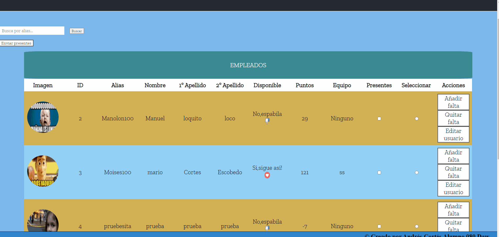

Nos dirigimos a la parte de incio de la aplicación web de la zona privada y veremos que hay un botón `Enviar presentes`, en los campos de cada empleado podemos ver que hay un campo de presentes podemos seleccionar a los usuarios que no han faltado ese día y sumarle los puntos correspondientes de ese día. 